Within-layer smoothing increases BOLD orientation readout during encoding without detectable cross-epoch gains in human V1 using 7 T fMRI
Within-depth smoothing strengthened the radial sensory code but did not improve cross-decoding: the mnemonic code is spatially organized differently from the sensory code.
S0At a glance
At 3 T, sensory and mnemonic orientation codes in early visual cortex share their representational geometry but sit in separate subspaces, and the sensory code follows the retinotopic layout of cortex while the mnemonic code does not. Here seven people held one oriented grating in mind for about 15 s while we recorded 0.82-mm BOLD and VASO fMRI at 7 T. We smoothed within each cortical depth (2.3, 3 and 4 mm) and asked which code gains: the encoding (E) code, the delay (D) code, or the transfer between them.
Statistics are paired across the seven people: mean [95% t interval], t(6) and two-sided p, with the exact sign-flip p over all 2⁷ sign patterns where the poster uses it.
Poster panel and section
| Panel | Poster headline | Section |
|---|---|---|
| 1 | At 3 T, working-memory representations in early visual cortex form a re-embedded code | S0, S11 |
| 2 | Orientation estimation task and 7 T fMRI acquisition | S1, S2 |
| 3 | Preprocessing: per session, in acquired EPI space | S3 |
| 4 | Within-depth smoothing cuts noise, sharpens maps and keeps depths apart | S4 |
| 5 | Cross-decoding tests for a shared code; radiality and geometry test spatial organization | S5, S6 |
| 6 | Smoothing improves decoding during encoding only, not during the delay or across epochs | S7 |
| 7 | Smoothing sharpens the radial map and orientation geometry of the sensory code, not the mnemonic code | S8 |
| 8 | Feedforward (middle) and feedback (superficial, deep) layers during encoding and delay | S9 |
| 9 | Future plans: from 3 T subspaces to 7 T layers | S10 |
Methods
S1Participants, task and behaviour Poster 2
Seven adults took part (2 female, 25–34 years). Each completed 2–3 scanning sessions (15 in total). A session had about 12 runs (9–13; 177 runs in total), and a run had 12 trials (2,124 trials in total). One session was aligned in two separate parts, so the data form 16 acquisition groups.
Trial
- A sine-wave grating at 10% contrast filled an annulus from 2° to 8.5° eccentricity for 1.5 s. Its contrast polarity reversed every 0.375 s.
- The grating took one of 24 orientations, 0–172.5° in 7.5° steps.
- A delay followed. The fixation dot turned green 0.5 s before the response screen (cue).
- At 17.109 s after stimulus onset, two opposing green dots appeared on a ring around fixation at a random angle. Participants rotated the pair with two keys to match the remembered orientation and confirmed within 4.5 s.
- The fixation dot then turned blue (response given) or red (no response), and an inter-trial interval followed. Each trial lasted 26.614 s, which is 7 acquisition samples of 3.802 s (S2).
Behaviour
Participants reported the orientation on 2,039 of 2,124 trials. Mean absolute error was 7.4° across the 7 participants (range 5.8–9.4°), and the standard deviation of the error within a participant ranged from 7.1° to 14.1°.
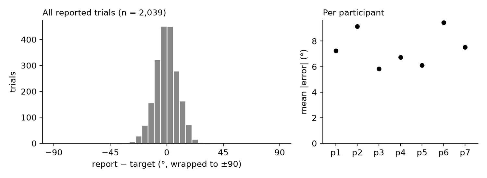
| Participant | Sessions | Runs | Trials with report | Mean |error| (°) |
|---|---|---|---|---|
| p1 | 3 | 37 | 436 | 7.2 |
| p2 | 2 | 24 | 266 | 9.1 |
| p3 | 2 | 24 | 272 | 5.8 |
| p4 | 2 | 21 | 249 | 6.7 |
| p5 | 2 | 24 | 285 | 6.1 |
| p6 | 2 | 23 | 251 | 9.4 |
| p7 | 2 | 24 | 280 | 7.5 |
| All | 15 | 177 | 2,039 | 7.4 |
All: totals over participants; the mean |error| is the mean of the 7 participant means.
S2Acquisition, sample timing and V1 coverage Poster 2
Images were acquired at 7 T with a VASO sequence that yields a blood-nulled (VASO) image and a BOLD image in each 3.802-s cycle. Each pair forms one sample, so a trial of 26.614 s holds 7 samples of each contrast.
| Scanner | Siemens MAGNETOM 7T Plus (investigational device); receive coil elements A32 |
| Sequence | 3D-EPI slab-selective slice-inversion (SS-SI) VASO with BOLD correction; fat saturation |
| Sampling | Blood-nulled and BOLD images alternate every 1.901 s; one 3.802-s pair (TR) is one sample |
| Contrast | TI1 1296.4 ms, TI2 2669.2 ms, flip angle 35°, TE 20.1 ms |
| Slab | 24 slices of 0.82 mm (19.7 mm), oblique (T > C −44.1°), phase encoding A >> P |
| Voxels | FoV 155 mm, matrix 190 × 190: 0.816 × 0.816 × 0.82 mm |
| Acceleration | CAIPIRINHA 3D ×3, partial Fourier 6/8, bandwidth 1052 Hz/Px, echo spacing 1.07 ms |
| Reconstruction | NORDIC denoising on the scanner |
| Run | 87 samples (pairs) per run |
Sample timing: encoding (E) and delay (D)
Each sample is time-stamped at the centre of its image within the trial: the blood-nulled image fills the first half of the pair and the BOLD image the second half. Times are also given relative to the response screen, which appears 17.109 s after stimulus onset. Encoding (E) is the sample at which the mean V1 response peaks: BOLD sample 1 and VASO sample 2 (figure). Delay (D) is the sample 3 cycles (11.4 s) after E in each contrast: BOLD sample 4 and VASO sample 5. Taking each contrast's lag from stimulus to peak (5.9 s for BOLD, 7.8 s for VASO), both D samples reflect activity 12.2 s after stimulus onset, in the second half of the delay and before the response screen. Both samples were fixed before decoding.
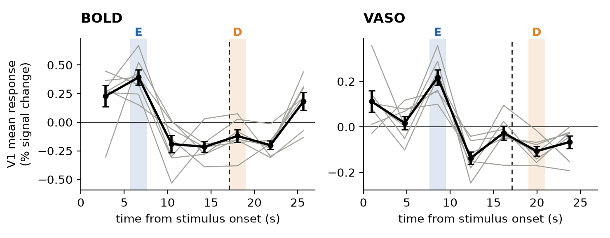
| Sample | BOLD centre (s) | BOLD vs response (s) | VASO centre (s) | VASO vs response (s) |
|---|---|---|---|---|
| 0 | 2.85 | −14.26 | 0.95 | −16.16 |
| 1 | 6.65 E | −10.46 | 4.75 | −12.36 |
| 2 | 10.46 | −6.65 | 8.55 E | −8.55 |
| 3 | 14.26 | −2.85 | 12.36 | −4.75 |
| 4 | 18.06 D | +0.95 | 16.16 | −0.95 |
| 5 | 21.86 | +4.75 | 19.96 D | +2.85 |
| 6 | 25.66 | +8.55 | 23.76 | +6.65 |
V1 coverage
V1 was defined in each participant's anatomy with the Benson et al. (2014) retinotopic atlas, at 0–8.5° eccentricity, and carried into the acquired EPI space of each session (S3). The analysed population is the part of this V1 that the slab covered and that passed voxel selection (S3). Across the 15 sessions it held 18–72% of atlas V1 voxels (median 49%). Sessions of the same participant differed by up to 10 percentage points. The smallest share was in p5 (18% and 24%).
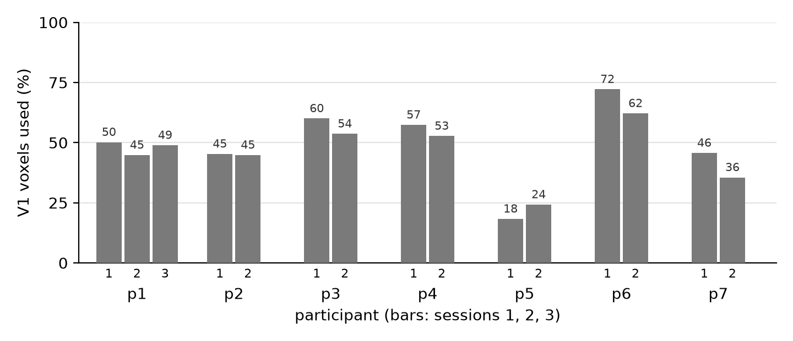
S3Preprocessing: per session, in acquired EPI space Poster 3
Each session was preprocessed on its own, in the space in which it was acquired. All runs of a session were brought once onto the oblique EPI grid of one reference run, and anatomy, atlas and depth labels were brought into this distorted EPI space. Functional voxels therefore keep their acquired geometry. The figures below show one run of one representative session.
1NORDIC denoising
Thermal noise was removed with NORDIC on all 87 volumes of each run (magnitude images, 10×10×10 kernel), with the threshold set from the two noise-only volumes; the 85 imaging frames were kept. At 0.82 mm, thermal noise dominates each voxel's time series. The threshold factor was set to 0.8, because the default threshold also removed signal beyond thermal noise.
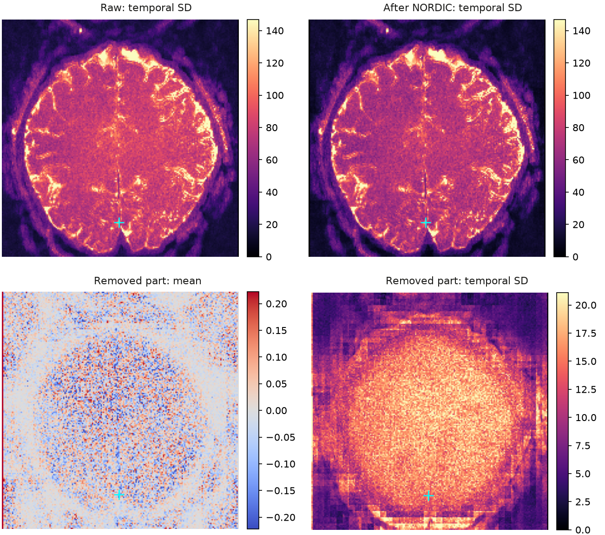
2Motion correction
BOLD and blood-nulled images were realigned within each run with AFNI 3dvolreg, each contrast on its own, because the two move together but look different. A rigid transform linked each nulled image to its BOLD partner, and ANTs aligned every run rigidly to one reference run. All transforms were combined and applied in a single step (wsinc5) onto the reference run's oblique EPI grid, so the data were interpolated only once.
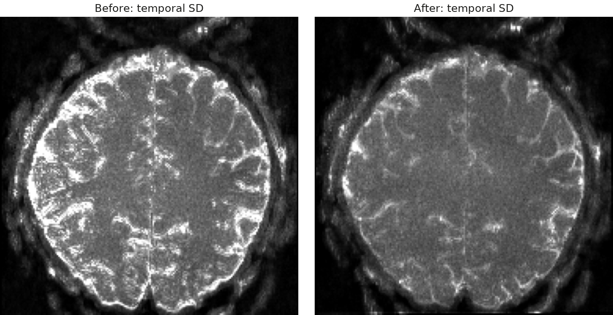
3BOLD correction
VASO images were computed with LAYNII LN_BOCO (v2.10.0). The BOLD series was upsampled in time and shifted by half a cycle (1.901 s) to the acquisition times of the nulled images, and VASO = nulled / BOLD. The division removes the BOLD weighting that the nulled image also carries. At analysis the sign was flipped (×−1), so that higher values mean more blood volume.
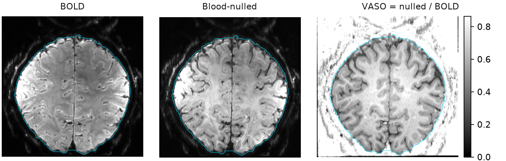
4Distortion correction
Forward and reverse phase-encoded images of the reference run gave a distortion field (AFNI 3dQwarp -plusminus). This warp moved the anatomy into the distorted frame of the EPI. Functional voxels keep their acquired geometry, and the functional data are resampled only once (step 2).
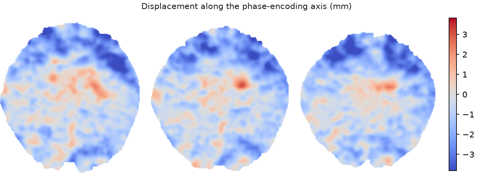
5Anatomical V1 ROI
The T1-weighted anatomy, its pial and white-matter boundaries and its FreeSurfer labels were carried into EPI space. V1 came from the Benson retinotopic atlas (neuropythy), which predicts V1 from each person's cortical folding, limited to 0–8.5° eccentricity. Labels were sampled on a grid that splits each EPI voxel into 3×3×3 subvoxels; this grid serves sampling, and the analysis stays at EPI resolution.
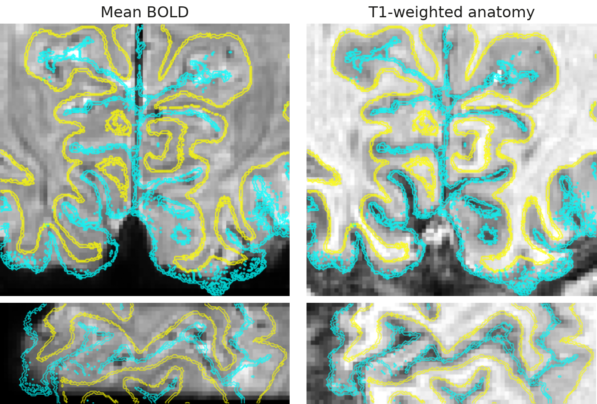
6Equivolume layering
Cortical depth was computed with LAYNII LN2_LAYERS (v2.10.0) as 7 equivolume bins between the pial and white-matter boundaries, numbered from L1 at the pial surface to L7 next to white matter. Each EPI voxel received 7 depth fractions from its 27 subvoxels and was assigned to the majority bin. The bins set where smoothing and pooling may reach (S4).
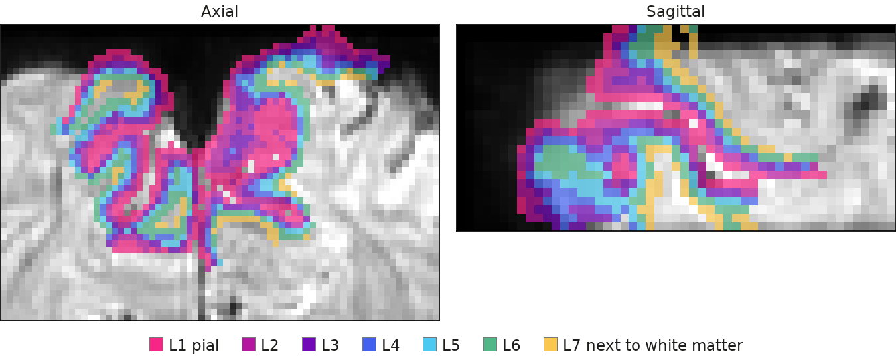
7Voxel selection
A voxel was analysed if it lay in atlas V1 with depth support, outside the fold-over guard (a mask over brain tissue that wraps around the field of view), and had BOLD tSNR above 5 (per run, after quadratic detrending). Only voxels that met these criteria in every run of the session were kept. This removes voxels without usable signal and voxels where aliased anatomy overlaps.
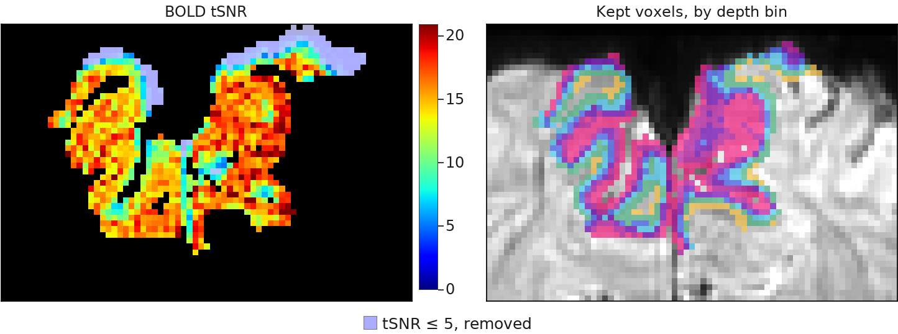
8Confound regression
Each voxel's series was converted to percent signal change and regressed, over frames 2–84, on Legendre drift (orders 0–2), the six motion parameters and their temporal derivatives, and one regressor for each frame with framewise displacement (FD) above 0.9 mm. Fits used robust weighted least squares, and spike frames were then set to missing. This removes slow drift and motion-related signal before patterns are read.
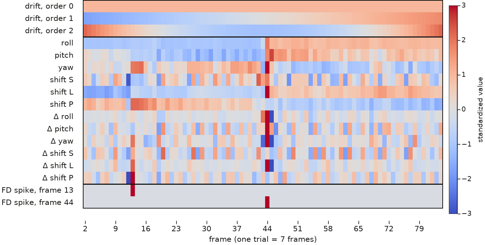
9Within-layer smoothing
The residuals were smoothed with LAYNII LN_LAYER_SMOOTH (-NoKissing, masked) at 0.82 mm FWHM, within each depth bin and inside the selected voxels. The kernel matches one voxel width, and voxels on opposite banks of a sulcus stay apart. This 0.82-mm data set is the baseline in every figure; S4 widens the same smoother.
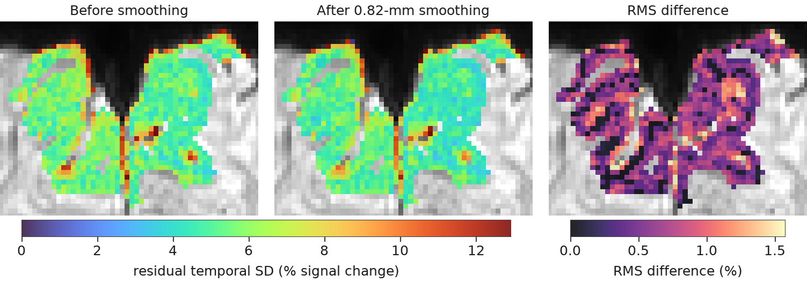
S4Within-depth smoothing cuts noise, sharpens maps and keeps depths apart Poster 4
Each 0.82-mm voxel gives a noisy estimate of its orientation preference. We reduced this noise by pooling signal along each of the seven equivolume depth bins with Gaussian kernels of 2.3, 3 and 4 mm (full width at half maximum), on the acquired EPI grid. Signal is never averaged across depth bins, so every voxel keeps its depth. The baseline, called native, is the same grid with 0.82-mm within-depth smoothing, about one voxel width.
The diagram simulates one orientation's voxel responses in three depth bins (rows) before and after 4-mm smoothing within each bin. A pattern shared along a bin survives, voxel noise shrinks, and the bins stay distinct.
The same within-depth smoother (LAYNII) runs on the residuals after confound regression, for every run and for both BOLD and VASO (S3, steps 8–9); all readouts (S5) then use the smoothed patterns.
S5Cross-decoding tests for a shared code; radiality and geometry test spatial organization Poster 5
All readouts use the trial-wise pattern of percent signal change in V1 (Benson atlas, 0–8.5° eccentricity) at the encoding (E) or delay (D) sample (S2).
1 · Decoding: can a held-out run's orientation be reconstructed?
An inverted encoding model with 8 orientation channels (cos⁸ tuning) is fitted by least squares on all runs but one and inverted on the held-out run, separately for each acquisition group. Fidelity is 45° minus the circular mean absolute reconstruction error on the 180° orientation circle: +45° for perfect readout, 0° at chance. Training and test epochs cross to give four cells. The diagonal (E→E, D→D) reads out each epoch; the off-diagonal (E→D, D→E) tests whether a model learned in one epoch transfers to the other, that is, a shared code.
2 · Radiality: do voxels prefer the orientation that points to their visual-field position?
For each voxel we fit constant + cos 2θ + sin 2θ to its trial responses after removing each trial's spatial mean; the phase gives the preferred orientation θv. Radiality = meanv cos 2(θv − αv), where αv is the voxel's atlas polar angle. It is 1 when every voxel prefers the radial orientation and 0 when preference is unrelated to position.
3 · Orientation geometry: are nearby orientations represented by nearby patterns?
We computed cross-validated Mahalanobis (crossnobis) distances dij between the patterns of the 24 orientation bins, with 5 stratified trial folds. Ring ρ = Spearman ρ(dij, |θi − θj|), the correlation between distance and circular orientation difference, over the 276 pairs i < j within an epoch; the cross-epoch version compares the E pattern of bin i with the D pattern of bin j over 552 pairs i ≠ j. ρ > 0 means nearby orientations have nearby patterns.
S6Aggregation and statistics
- Aggregation. Every score is computed within an acquisition group (a session, or a separately aligned part of one), averaged with equal weight over groups within a person, then with equal weight over the 7 people.
- Smoothing effects. Paired per-person differences from native (0.82 mm) on the same trials.
- Within − cross contrast. [(ΔE→E + ΔD→D) − (ΔE→D + ΔD→E)] / 2, tested with the exact two-sided sign-flip test over all 2⁷ = 128 sign patterns.
- Tests. Paired t test against zero across the seven people, reported as mean [95% t interval], t(6) and two-sided p, with the exact sign-flip p where the poster uses it. The comparison with Lawrence et al. (2018) uses a replication Bayes factor (Verhagen & Wagenmakers, 2014).
- Chance level of D→D. Label permutation that refits the model (63 permutations), Holm-corrected over the three kernel widths.
- Depth. Superficial − middle, deep − middle and (superficial + deep)/2 − middle are computed per person from the preferred − non-preferred response of each depth, then tested across people.
Results
S7Smoothing improves decoding during encoding only, not during the delay or across epochs Poster 6
Within-depth smoothing raised BOLD E→E fidelity by 1.54–1.98° across the three kernel widths, and all seven participants improved at each width. D→D, E→D and D→E did not change. The within-epoch gain exceeded the cross-epoch gain in every participant at every width.
7.1 · Fidelity by kernel width
Each train → test cell is the fidelity of an inverted encoding model trained on the encoding (E) or delay (D) sample and tested on a held-out run of either sample; 45° is perfect readout and 0° is chance.
E→E rose from 6.52° at native to 8.16°, 8.50° and 8.06° at 2.3, 3 and 4 mm. D→D ranged from 1.48° to 2.09° across widths. Between native and 4 mm, E→D went from 1.19° to 0.53° and D→E from 1.27° to 0.69°.
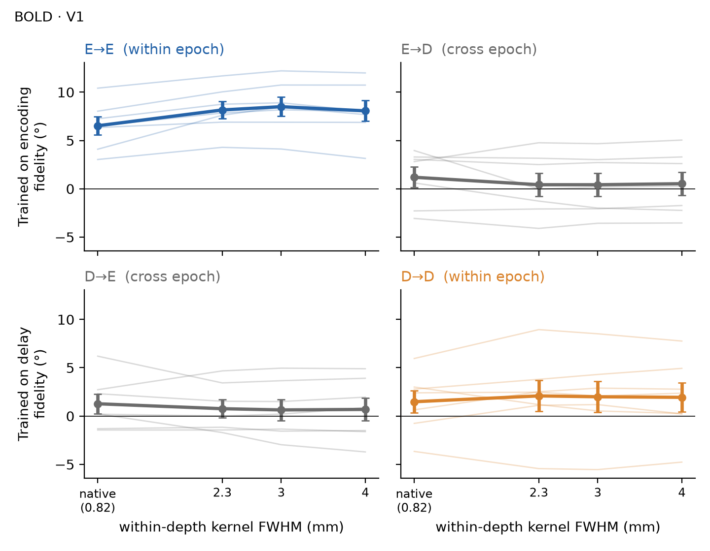
7.2 · Change from native
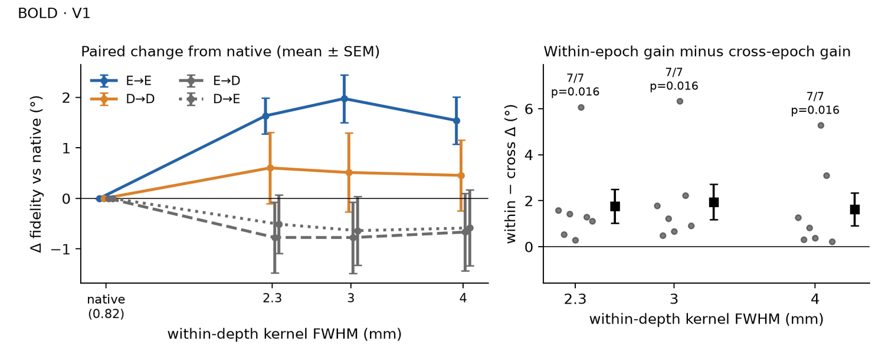
Changes are paired differences from native across the seven participants, reported as mean [95% t interval], t(6) and two-sided p, followed by the exact two-sided sign-flip p over all 2⁷ = 128 sign patterns (smallest attainable p = .016). From native to 4 mm:
- ΔE→E +1.54° [0.40, 2.68], t(6) = 3.31, p = .016; sign-flip p = .016; 7/7 participants positive
- ΔD→D +0.46° [−1.26, 2.17], t(6) = 0.65, p = .539; sign-flip p = .500; 4/7 participants positive
- ΔE→D −0.67° [−2.53, 1.20], t(6) = −0.87, p = .415; sign-flip p = .375; 3/7 participants positive
- ΔD→E −0.58° [−2.42, 1.25], t(6) = −0.78, p = .467; sign-flip p = .484; 2/7 participants positive
At every width, only the ΔE→E interval excluded zero: +1.63° [0.77, 2.50] at 2.3 mm, +1.98° [0.82, 3.13] at 3 mm and +1.54° [0.40, 2.68] at 4 mm.
7.3 · Within-epoch gain against cross-epoch gain
The within − cross contrast, [(ΔE→E + ΔD→D) − (ΔE→D + ΔD→E)] / 2, compares the gain in the two within-epoch cells with the gain in the two cross-epoch cells. It was tested with the exact sign-flip test; the paired t test follows in parentheses.
- 2.3 mm: +1.76° [−0.05, 3.57], exact sign-flip p = .016 (t(6) = 2.38, p = .055); 7/7 positive
- 3 mm: +1.95° [0.08, 3.82], exact sign-flip p = .016 (t(6) = 2.55, p = .044); 7/7 positive
- 4 mm: +1.62° [−0.13, 3.38], exact sign-flip p = .016 (t(6) = 2.27, p = .064); 7/7 positive
| train → test | native | 2.3 | 3 | 4 | Δ 2.3 | Δ 3 | Δ 4 |
|---|---|---|---|---|---|---|---|
| E→E | 6.52 | 8.16 | 8.50 | 8.06 | +1.63 (p = .004) | +1.98 (p = .006) | +1.54 (p = .016) |
| D→D | 1.48 | 2.09 | 1.99 | 1.94 | +0.60 (p = .425) | +0.51 (p = .535) | +0.46 (p = .539) |
| E→D | 1.19 | 0.42 | 0.42 | 0.53 | −0.77 (p = .310) | −0.77 (p = .314) | −0.67 (p = .415) |
| D→E | 1.27 | 0.76 | 0.63 | 0.69 | −0.51 (p = .412) | −0.64 (p = .386) | −0.58 (p = .467) |
| within − cross | +1.76 (sign-flip p = .016) | +1.95 (sign-flip p = .016) | +1.62 (sign-flip p = .016) | ||||
7.4 · Delay decoding against a permutation null
Within each run we permuted the orientation labels, refit the model and recomputed the cohort-mean D→D fidelity, 63 times per width; p = (1 + number of permuted values ≥ observed) / 64. Observed D→D fidelity (2.09°, 1.99° and 1.94° at 2.3, 3 and 4 mm) exceeded the permutation null at every width: one-sided p = .031 at each width. Holm-corrected across the three widths, p = .094 at each width.
7.5 · VASO
In VASO, E→E fidelity was −0.19° at native and 0.95°, 1.01° and 0.62° at 2.3, 3 and 4 mm. No change from native reached p < .05 in any cell at any width (smallest paired t p = .132; smallest sign-flip p = .141). The within − cross contrast ranged from −0.70° to +0.15° across widths (sign-flip p ≥ .734).
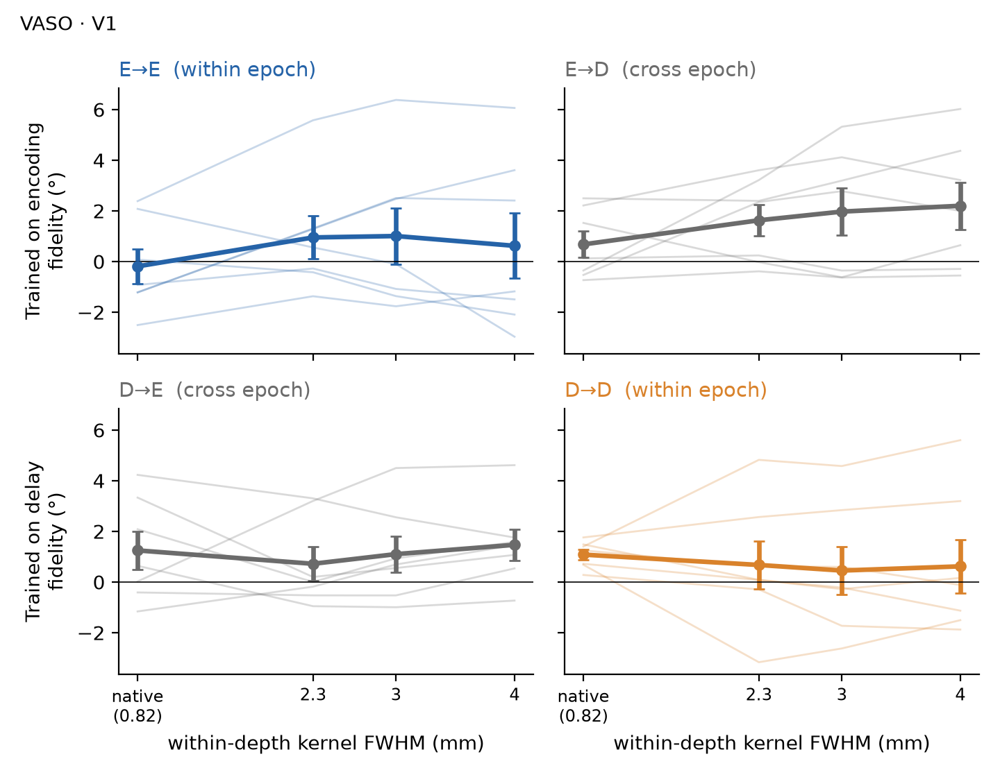
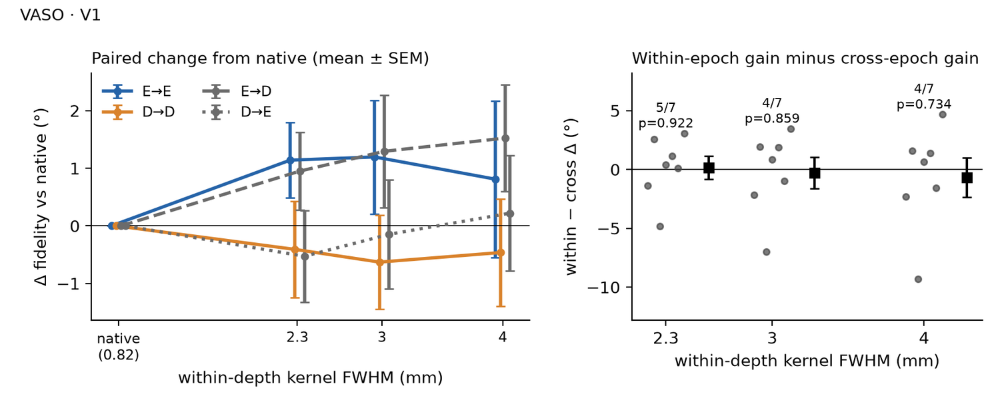
From native to 4 mm:
- ΔE→E +0.81° [−2.52, 4.14], t(6) = 0.60, p = .573; sign-flip p = .578; 4/7 participants positive
- ΔD→D −0.46° [−2.75, 1.82], t(6) = −0.50, p = .637; sign-flip p = .641; 2/7 participants positive
- ΔE→D +1.52° [−0.75, 3.80], t(6) = 1.64, p = .152; sign-flip p = .141; 5/7 participants positive
- ΔD→E +0.22° [−2.22, 2.66], t(6) = 0.22, p = .832; sign-flip p = .844; 3/7 participants positive
Within − cross:
- 2.3 mm: +0.15° [−2.31, 2.62], exact sign-flip p = .922 (t(6) = 0.15, p = .883); 5/7 positive
- 3 mm: −0.29° [−3.54, 2.96], exact sign-flip p = .859 (t(6) = −0.22, p = .834); 4/7 positive
- 4 mm: −0.70° [−4.80, 3.40], exact sign-flip p = .734 (t(6) = −0.42, p = .691); 4/7 positive
| train → test | native | 2.3 | 3 | 4 | Δ 2.3 | Δ 3 | Δ 4 |
|---|---|---|---|---|---|---|---|
| E→E | −0.19 | 0.95 | 1.01 | 0.62 | +1.14 (p = .132) | +1.20 (p = .271) | +0.81 (p = .573) |
| D→D | 1.08 | 0.67 | 0.45 | 0.62 | −0.41 (p = .641) | −0.63 (p = .468) | −0.46 (p = .637) |
| E→D | 0.68 | 1.63 | 1.97 | 2.20 | +0.95 (p = .209) | +1.29 (p = .235) | +1.52 (p = .152) |
| D→E | 1.25 | 0.72 | 1.10 | 1.47 | −0.53 (p = .532) | −0.15 (p = .883) | +0.22 (p = .832) |
| within − cross | +0.15 (sign-flip p = .922) | −0.29 (sign-flip p = .859) | −0.70 (sign-flip p = .734) | ||||
S8Smoothing sharpens the radial map and orientation geometry of the sensory code, not the mnemonic code Poster 7
Within-depth smoothing strengthened the radial orientation map and the orientation geometry of the BOLD encoding pattern. The delay pattern kept a near-zero radial map at every kernel width, and its geometry changed less. Cross-epoch geometry stayed near zero. VASO reproduced the growth of the radial map during encoding.
Measures
Both measures use the trial-wise V1 patterns at the encoding (E) and delay (D) samples, at each kernel width (native 0.82 mm, 2.3, 3 and 4 mm).
Radiality. For each voxel v, a cos 2θ + sin 2θ fit across trials gives its preferred orientation θv; αv is its atlas polar angle.
radiality = meanv cos 2(θv − αv)
It is 1 when every voxel prefers the radial orientation and 0 when preference is unrelated to polar angle.
Ring ρ. dij is the crossnobis (cross-validated Mahalanobis) distance between the patterns of orientation bins i and j, over 24 bins.
ring ρ = Spearman ρ(dij, |θi − θj|)
|θi − θj| is the circular orientation difference. Within an epoch the pairs are i < j. The cross-epoch version pairs the E pattern of bin i with the D pattern of bin j. ρ > 0 means that nearby orientations have nearby patterns.
Preferred-orientation maps
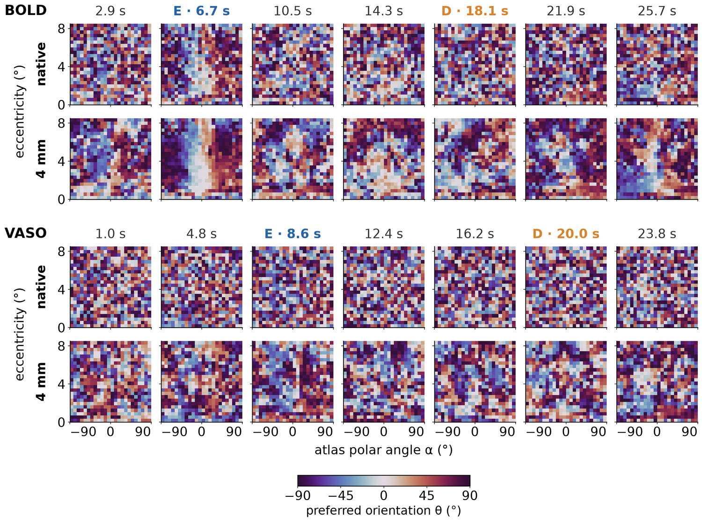
In BOLD, preferred orientation followed polar angle most clearly at the encoding sample (6.7 s), and the gradient sharpened from native to 4 mm. The samples just before and after it (2.9 and 10.5 s) showed a weaker radial gradient, the samples through the delay (14.3 and 18.1 s) showed none, and a weak radial gradient returned at the last two samples (21.9 and 25.7 s). VASO maps were noisier at every sample; at 4 mm, VASO radiality was highest one sample before encoding (4.8 s) and stayed near zero through the delay. Radiality of the 4 mm maps from the first to the last sample, mean over 7 people: BOLD 0.038, 0.169, 0.036, 0.012, 0.006, 0.045 and 0.073; VASO −0.012, 0.047, 0.032, 0.004, 0.012, 0.004 and 0.037.
Radiality
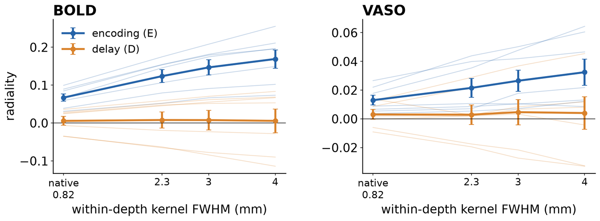
- BOLD encoding. Radiality rose from 0.067 at native to 0.169 at 4 mm, and it rose in 7 of 7 people. Δ = +0.102 [0.065, 0.138], t(6) = 6.84, p < .001.
- BOLD delay. Radiality was 0.006 at native and 0.006 at 4 mm. Δ = +0.000 [−0.048, 0.048], t(6) = 0.01, p = 1.00. At 4 mm, individual values ranged from −0.114 to 0.083, with 4 of 7 people above zero.
- VASO encoding. Radiality rose from 0.013 at native to 0.032 at 4 mm, in 7 of 7 people. Δ = +0.019 [0.004, 0.035], t(6) = 3.00, p = .024.
- VASO delay. Radiality was 0.003 at native and 0.004 at 4 mm. Δ = +0.001 [−0.020, 0.022], t(6) = 0.11, p = .915.
Orientation geometry
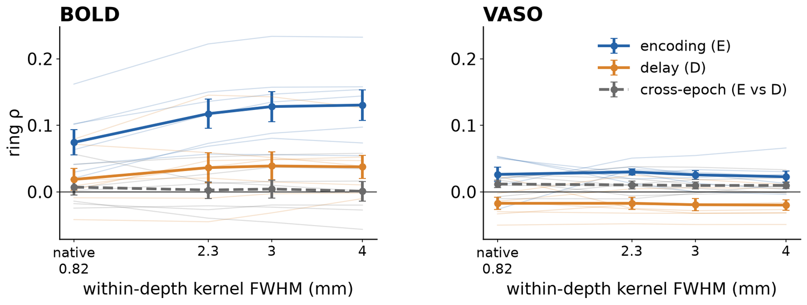
- BOLD encoding. Ring ρ rose from 0.074 at native to 0.130 at 4 mm, in 7 of 7 people. Δ = +0.056 [0.035, 0.078], t(6) = 6.38, p < .001; sign-flip p = .016.
- BOLD delay. Ring ρ rose from 0.019 at native to 0.038 at 4 mm, in 5 of 7 people. Δ = +0.019 [−0.010, 0.047], t(6) = 1.61, p = .158; sign-flip p = .172.
- BOLD cross-epoch. Ring ρ stayed near zero: 0.007 at native and 0.001 at 4 mm. Δ = −0.006 [−0.035, 0.023], t(6) = −0.52, p = .620; sign-flip p = .609.
- VASO. Ring ρ changed little with smoothing. Encoding: 0.026 at native and 0.023 at 4 mm, Δ = −0.004 [−0.045, 0.037], t(6) = −0.21, p = .839; sign-flip p = .828. Delay: −0.017 at native and −0.020 at 4 mm, Δ = −0.003 [−0.025, 0.020], t(6) = −0.28, p = .787; sign-flip p = .828. Cross-epoch: 0.012 at native and 0.010 at 4 mm, Δ = −0.002 [−0.022, 0.018], t(6) = −0.24, p = .815; sign-flip p = .828.
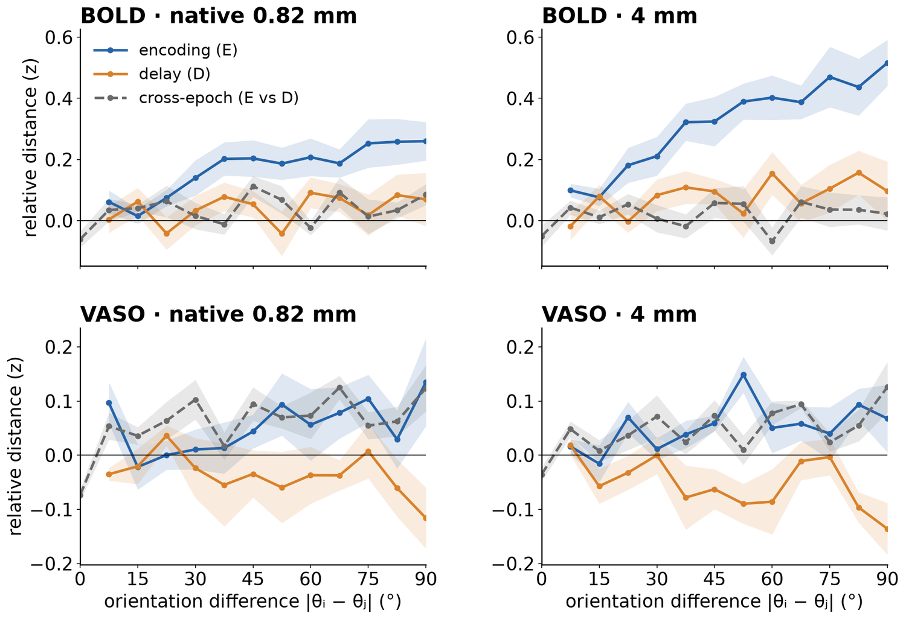
The distance curves show what ring ρ summarizes. In BOLD encoding, distance grew steadily with orientation difference, and the growth steepened with smoothing. At 90°, the curve reached 0.26 at native and 0.52 at 4 mm. The BOLD delay curve rose less (0.07 at native and 0.10 at 4 mm at 90°), and the cross-epoch curve stayed near zero (0.09 at native and 0.02 at 4 mm). VASO curves were flat and variable at both widths. The VASO delay curve fell below zero at large differences (−0.12 at native and −0.14 at 4 mm at 90°), in line with its negative ring ρ.
All kernel widths
| Pattern | native | 2.3 mm | 3 mm | 4 mm | Δ | 95% CI | up | t(6) | p | sign-flip p |
|---|---|---|---|---|---|---|---|---|---|---|
| Radiality | ||||||||||
| BOLD E | 0.067 | 0.124 | 0.147 | 0.169 | +0.102 | [0.065, 0.138] | 7/7 | 6.84 | < .001 | .016 |
| BOLD D | 0.006 | 0.008 | 0.008 | 0.006 | +0.000 | [−0.048, 0.048] | 4/7 | 0.01 | 1.00 | 1.00 |
| VASO E | 0.013 | 0.022 | 0.027 | 0.032 | +0.019 | [0.004, 0.035] | 7/7 | 3.00 | .024 | .016 |
| VASO D | 0.003 | 0.003 | 0.005 | 0.004 | +0.001 | [−0.020, 0.022] | 3/7 | 0.11 | .915 | .875 |
| Ring ρ | ||||||||||
| BOLD E | 0.074 | 0.117 | 0.128 | 0.130 | +0.056 | [0.035, 0.078] | 7/7 | 6.38 | < .001 | .016 |
| BOLD D | 0.019 | 0.036 | 0.039 | 0.038 | +0.019 | [−0.010, 0.047] | 5/7 | 1.61 | .158 | .172 |
| BOLD E vs D | 0.007 | 0.003 | 0.004 | 0.001 | −0.006 | [−0.035, 0.023] | 3/7 | −0.52 | .620 | .609 |
| VASO E | 0.026 | 0.030 | 0.026 | 0.023 | −0.004 | [−0.045, 0.037] | 3/7 | −0.21 | .839 | .828 |
| VASO D | −0.017 | −0.017 | −0.019 | −0.020 | −0.003 | [−0.025, 0.020] | 4/7 | −0.28 | .787 | .828 |
| VASO E vs D | 0.012 | 0.010 | 0.010 | 0.010 | −0.002 | [−0.022, 0.018] | 3/7 | −0.24 | .815 | .828 |
S9Feedforward (middle) and feedback (superficial, deep) layers during encoding and delay Poster 8
Feedback − feedforward, (superficial + deep)/2 − middle, was negative at encoding and positive at the delay in both modalities: −0.057 at E and +0.049 at D in BOLD, −0.282 and +0.104 in VASO (% signal change). Superficial − middle and deep − middle had the same signs. Across the twelve tests (three contrasts × two modalities × two epochs), two-sided p ranged from .082 to .941.
1 · Voxels, depths and response measure
Voxels. In the stimulated annulus of V1 (2–8.5° eccentricity), each voxel's orientation tuning was estimated on the training runs by fitting constant + cos 2θ + sin 2θ to its encoding-sample responses, after removing each trial's spatial mean. The 1,000 voxels with the largest tuning amplitude were kept, after Lawrence et al. (2018). Selection was repeated in every leave-one-run-out fold, and the held-out run supplied the test trials.
Depths. Each voxel's volume was divided among the seven equivolume depth bins (S4), and the bins were merged into three equal thirds of cortex: superficial = L1, L2 and ⅓ of L3; middle = ⅔ of L3, L4 and ⅔ of L5; deep = ⅓ of L5, L6 and L7. Middle depths stand for feedforward input, superficial and deep depths for feedback.
Response. On each held-out trial with target orientation θ, the selected voxels were split into a preferred group (preferred orientation within ±22.5° of θ) and a non-preferred group (within ±22.5° of θ + 90°). In each group, the voxels' responses (% signal change) were regressed on their superficial, middle and deep volume fractions plus one regressor for the volume outside gray matter. The three depth coefficients are the depth responses, and the measure is preferred − non-preferred for each depth, averaged over trials, at each of the seven samples of the trial. VASO is signed so that a blood-volume increase is positive.
Epochs and tests. Encoding (E) and delay (D) are the samples used for decoding (S2): E is centred at 6.7 s (BOLD) and 8.6 s (VASO) after stimulus onset, D at 18.1 s and 20.0 s; the response period starts at 17.1 s. For each participant we computed superficial − middle, deep − middle and (superficial + deep)/2 − middle, and tested each against zero across the 7 participants with a two-sided paired t test (S6).
2 · Depth profiles at encoding and delay
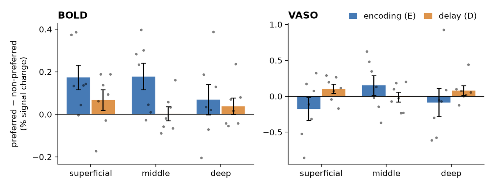
Mean preferred − non-preferred response, superficial, middle and deep (% signal change): BOLD: E +0.173, +0.178, +0.069; D +0.067, +0.003, +0.038. VASO: E −0.177, +0.151, −0.086; D +0.105, −0.010, +0.081.
3 · Depth contrasts across the trial
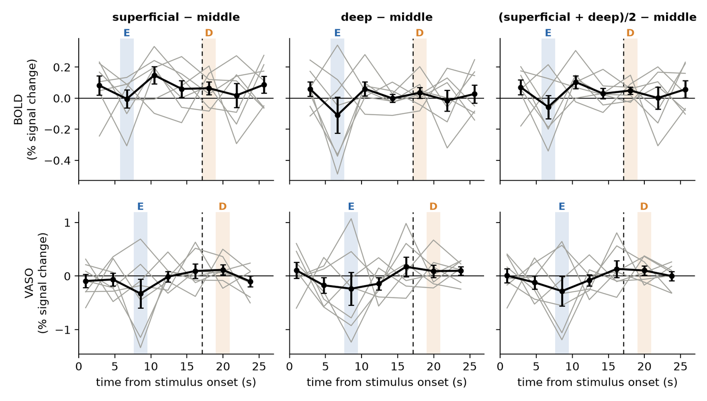
In both modalities, the cohort means of all three contrasts were below zero at the E sample and above zero at the D sample. Section 4 gives the tests at these two samples.
4 · Statistics
| Modality | Epoch | Contrast | Mean [95% CI], t(6), p | dz | Positive |
|---|---|---|---|---|---|
| BOLD | encoding (E) | superficial − middle | −0.005 [−0.147, 0.138], t(6) = −0.08, p = .941 | −0.03 | 4/7 |
| deep − middle | −0.109 [−0.392, 0.174], t(6) = −0.94, p = .383 | −0.36 | 3/7 | ||
| (superficial + deep)/2 − middle | −0.057 [−0.241, 0.128], t(6) = −0.75, p = .481 | −0.28 | 3/7 | ||
| delay (D) | superficial − middle | +0.064 [−0.037, 0.165], t(6) = 1.55, p = .173 | 0.58 | 5/7 | |
| deep − middle | +0.035 [−0.051, 0.121], t(6) = 0.98, p = .363 | 0.37 | 5/7 | ||
| (superficial + deep)/2 − middle | +0.049 [−0.008, 0.107], t(6) = 2.09, p = .082 | 0.79 | 5/7 | ||
| VASO | encoding (E) | superficial − middle | −0.327 [−0.994, 0.339], t(6) = −1.20, p = .275 | −0.45 | 2/7 |
| deep − middle | −0.236 [−0.991, 0.518], t(6) = −0.77, p = .473 | −0.29 | 2/7 | ||
| (superficial + deep)/2 − middle | −0.282 [−0.951, 0.387], t(6) = −1.03, p = .342 | −0.39 | 2/7 | ||
| delay (D) | superficial − middle | +0.116 [−0.114, 0.346], t(6) = 1.24, p = .263 | 0.47 | 5/7 | |
| deep − middle | +0.092 [−0.193, 0.376], t(6) = 0.79, p = .462 | 0.30 | 4/7 | ||
| (superficial + deep)/2 − middle | +0.104 [−0.110, 0.318], t(6) = 1.19, p = .280 | 0.45 | 4/7 |
5 · Comparison with Lawrence et al. (2018)
Lawrence et al. (2018) found larger working-memory signals in superficial and deep than in middle depths of human V1. Their voxels came from an independent localizer, and white matter and cerebrospinal fluid had separate regressors. Here voxels came from the encoding sample of the training runs, and one regressor modelled all volume outside gray matter.
| Study | n | t | dz |
|---|---|---|---|
| Lawrence et al. (2018) | 21 | t(20) = 3.61 | 0.79 |
| This study | 7 | t(6) = 1.55 | 0.58 |
The replication Bayes factor (Verhagen & Wagenmakers, 2014), which weighs the effect size estimated by Lawrence et al. against no effect, was 2.3 for the BOLD superficial − middle effect at the delay sample.
Outlook
S10Future plans: from 3 T subspaces to 7 T layers Poster 9
The 3 T study found that sensory and mnemonic orientation codes occupy separate subspaces of early visual cortex. Laminar 7 T fMRI lets us ask where in the cortical column each code lives.
- Decoding by layer. Test whether feedforward (middle) depths carry the sensory code, decodable during encoding but weak during the delay, and feedback (superficial and deep) depths carry the mnemonic code, weak during encoding but strong during the delay. The depth pattern in S9, negative at encoding and positive at the delay, points in this direction.
- Geometry by layer. Test the same split with orientation geometry (ring ρ) computed within each depth.
- Subspaces or populations? Ask whether the separate sensory and mnemonic subspaces found at 3 T are in fact separate neural populations across cortical layers.
Reference
S11Glossary and references
- Epoch
- When the pattern is sampled: during viewing (encoding, E; the sensory sample) or late in the delay (delay, D; the mnemonic sample).
- Within / cross epoch
- Train and test in the same epoch (E→E, D→D) or in different epochs (E→D, D→E).
- Fidelity
- 45° minus the circular mean absolute reconstruction error; 0° at chance.
- Radiality
- Alignment of each voxel's preferred orientation with the radial orientation at its visual-field position (radial bias).
- Ring ρ
- Spearman correlation between pattern distance and orientation difference.
- Depth bin (L1–L7)
- Equivolume cortical depth bin, L1 superficial (pial) to L7 deep (next to white matter); grouped as superficial, middle and deep.
- Feedforward / feedback depths
- Middle depths receive feedforward input; superficial and deep depths receive feedback.
- VASO
- Vascular-space-occupancy fMRI, sensitive to blood-volume change and less to draining veins than BOLD.
Funding. National Research Foundation of Korea (NRF) grants funded by the Korean government (MSIT), RS-2024-00349515 and RS-2024-00435727.
- Kim et al. (2026). Early visual cortex represents sensory and mnemonic orientations in separate subspaces with preserved geometry. Preprint. doi:10.64898/2026.04.20.718367
- Huber L. et al. (2014). Slab-selective, BOLD-corrected VASO at 7 Tesla provides measures of cerebral blood volume reactivity with high signal-to-noise ratio. Magn Reson Med 72:137–148.
- Vizioli L. et al. (2021). Lowering the thermal noise barrier in functional brain mapping with magnetic resonance imaging. Nat Commun 12:5181.
- Huber L. et al. (2021). LayNii: a software suite for layer-fMRI. NeuroImage 237:118091.
- Benson N.C. et al. (2014). Correction of distortion in flattened representations of the cortical surface allows prediction of V1–V3 functional organization from anatomy. PLoS Comput Biol 10:e1003538.
- Brouwer G.J. & Heeger D.J. (2009). Decoding and reconstructing color from responses in human visual cortex. J Neurosci 29:13992–14003.
- Walther A. et al. (2016). Reliability of dissimilarity measures for multi-voxel pattern analysis using representational similarity analysis. NeuroImage 137:188–200.
- Sasaki Y. et al. (2006). The radial bias: a different slant on visual orientation sensitivity in human and nonhuman primates. Neuron 51:661–670.
- Freeman J. et al. (2011). Orientation decoding depends on maps, not columns. J Neurosci 31:4792–4804.
- Lawrence S.J.D., van Mourik T., Kok P., Koopmans P.J., Norris D.G. & de Lange F.P. (2018). Laminar organization of working memory signals in human visual cortex. Curr Biol.
- Verhagen J. & Wagenmakers E.-J. (2014). Bayesian tests to quantify the result of a replication attempt. J Exp Psychol Gen 143:1457–1475.
- Rouder J.N. et al. (2009). Bayesian t tests for accepting and rejecting the null hypothesis. Psychon Bull Rev 16:225–237.